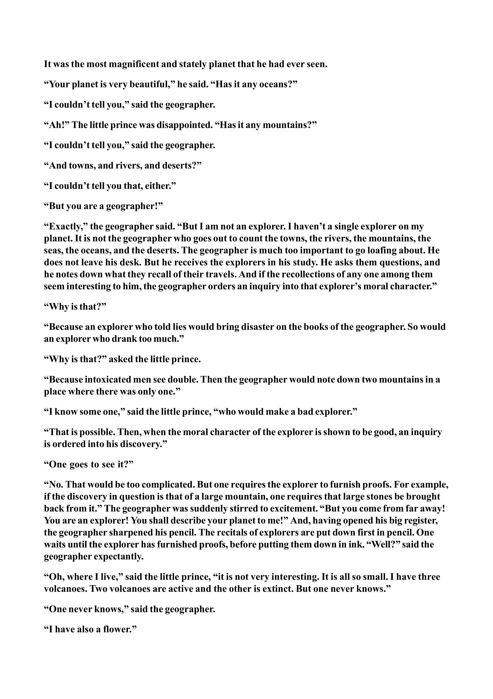

It was the most magnificent and stately planet that he had ever seen. “Your planet is very beautiful,” he said. “Has it any oceans?” “I couldn’t tell you,” said the geographer. “Ah!” The little prince was disappointed. “Has it any mountains?” “I couldn’t tell you,” said the geographer. “And towns, and rivers, and deserts?” “I couldn’t tell you that, either.” “But you are a geographer!” “Exactly,” the geographer said. “But I am not an explorer. I haven’t a single explorer on my planet. It is not the geographer who goes out to count the towns, the rivers, the mountains, the seas, the oceans, and the deserts. The geographer is much too important to go loafing about. He does not leave his desk. But he receives the explorers in his study. He asks them questions, and he notes down what they recall of their travels. And if the recollections of any one among them seem interesting to him, the geographer orders an inquiry into that explorer’s moral character.” “Why is that?” “Because an explorer who told lies would bring disaster on the books of the geographer. So would an explorer who drank too much.” “Why is that?” asked the little prince. “Because intoxicated men see double. Then the geographer would note down two mountains in a place where there was only one.” “I know some one,” said the little prince, “who would make a bad explorer.” “That is possible. Then, when the moral character of the explorer is shown to be good, an inquiry is ordered into his discovery.” “One goes to see it?” “No. That would be too complicated. But one requires the explorer to furnish proofs. For example, if the discovery in question is that of a large mountain, one requires that large stones be brought back from it.” The geographer was suddenly stirred to excitement. “But you come from far away! You are an explorer! You shall describe your planet to me!” And, having opened his big register, the geographer sharpened his pencil. The recitals of explorers are put down first in pencil. One waits until the explorer has furnished proofs, before putting them down in ink. “Well?” said the geographer expectantly. “Oh, where I live,” said the little prince, “it is not very interesting. It is all so small. I have three volcanoes. Two volcanoes are active and the other is extinct. But one never knows.” “One never knows,” said the geographer. “I have also a flower.”
